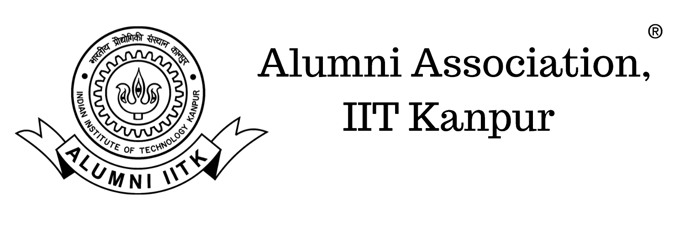

Connecting 45,000+ alumni across the globe. Established in March 1967.
IIT Kanpur prides itself on the success of its alumni. Established in March 1967, Alumni Association of IITK is an independent registered body of more than 45,000 alumni spanning across the globe. Our alumni have expanded their wings and reached new heights, be it as entrepreneurs, industrialists, academicians, researchers, social cause champions, bureaucrats etc. [citation:12][citation:7]
The spirit of Giving Back is reflected in every corner of the institute be it infrastructure development, scholarships, especially to girl students, financial support to various hobby clubs, set-up of different R&D labs and faculty chairs, donations to various community development sectors, environment etc.
https://iitkalumni.org [citation:12]
@IITKAA [citation:12]
Alumni Association IIT Kanpur [citation:2][citation:7]
AA Constitution [citation:12]